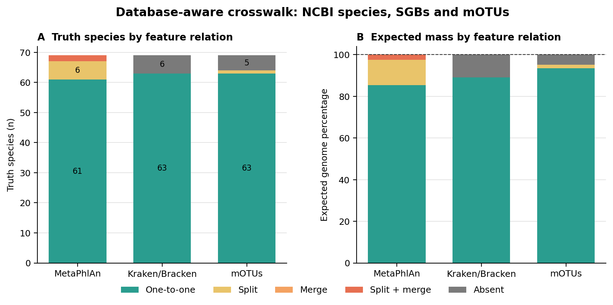
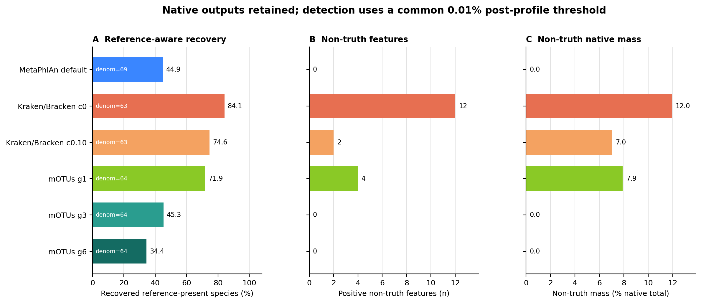
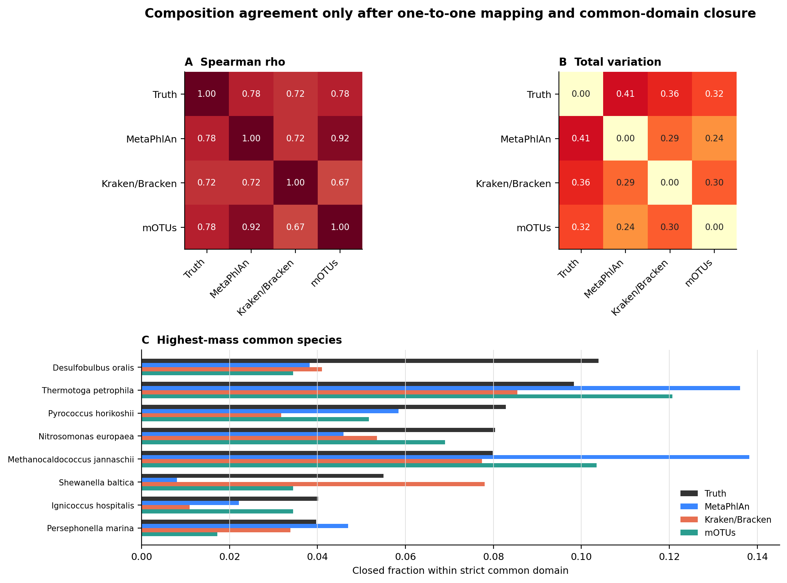
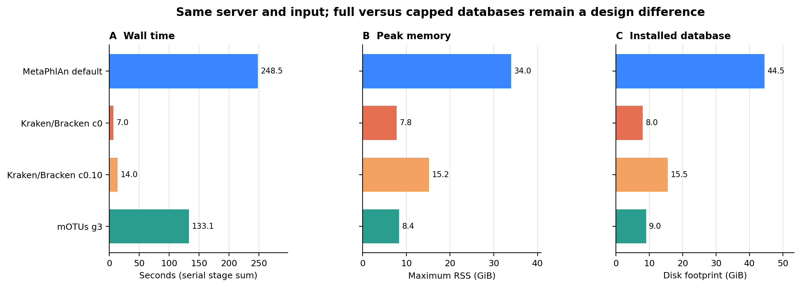

options(timeout = 600)
base_url <- "https://raw.githubusercontent.com/petemeng/metagenomics-best-practices/e219a2cd01609cc208a89e291cbd363ed7f2fbd8/"
files <- read.delim(paste0(base_url, "examples/18/files.tsv"))
for (i in seq_len(nrow(files))) {
path <- files$path[i]
dir.create(dirname(path), recursive = TRUE, showWarnings = FALSE)
if (!file.exists(path)) {
download.file(paste0(base_url, files$source[i]), path, mode = "wb")
}
}谱工具横评：MetaPhlAn vs Kraken2/Bracken vs mOTUs
学习目标：识别 MetaPhlAn SGB、Kraken/Bracken NCBI species 与 mOTU 不是同一种 feature；先求每个数据库真正覆盖的真值集合，再用共同的一对一物种域比较检出和组成；最后按研究问题、样本生态、假阳性成本与资源预算选择工具，而不是背一张“排行榜”。
真实数据：71-strain MOCK1 DNA 的 Illumina runERR9765746，使用 fastp 后保留的 99,991 个同步 pairs (Meslier 等 2022年)。三套输入的压缩 FASTQ SHA-256 与 normalized pair-ID hash 完全相同。真值来自 Supplementary Table S3 的 71 个 assembly，经固定 NCBI snapshot 解析为 69 个 current species；原表比例合计 100.0121565%，不静默改成整齐的 100%。
预计资源：只复跑 mOTUs 建议 8 核、12 GB RAM、20 GB 可用磁盘，实测主流程 133.1 秒、峰值 8.4 GiB；同时重建三套数据库与全部谱，建议至少 8 核、40 GB RAM、140 GB 可用磁盘。没有大内存服务器时，直接读取 checksum-locked profile、crosswalk 与聚合表即可重画结果；大型 FASTQ、BAM 和数据库索引不需要进入个人电脑。
提示先确定这一点
先对齐工具能够识别的共同物种集合；相关系数高，仍可能同时存在丰度偏差和漏检。
不同工具给出不同物种，先比较哪一部分？
分类器 benchmark 常把 recall、precision、F1 或 abundance error 放在一张图里；Wright 等进一步展示了数据库和参数选择足以改变 Kraken2 的结论 (Wright 等 2023年)。但 MetaPhlAn、Kraken/Bracken 与 mOTUs 的横评还有更早的一层：三者测量对象不同。
| Profiler | Native feature | Reference logic | Native abundance output |
|---|---|---|---|
| MetaPhlAn 4 | species-level genome bin, SGB；species row 为其聚合 | clade-specific marker genes，含 characterized 与 uncharacterized SGB | clade relative abundance；estimated reads 是内部估计量 |
| Kraken2 + Bracken | NCBI taxonomy node；这里评估 species | minimizer/LCA classification，再按数据库与 read length 重分配 | paired-fragment classification + Bracken estimated species reads |
| mOTUs 4 | marker-gene operational taxonomic unit, mOTU | 10 个 universal single-copy marker gene families 的 MGC evidence | INSERT_SCALED marker-gene insert counts |
如果直接按 species name 做 outer join，Pseudomonas_E alloputida、Pseudomonas putida、SGB 与 mOTUv4.0_* 会被误当成互不相干或一一对应的标签。正确顺序是：数据库参考覆盖 → feature split/merge → 原生检出 → 共同域组成。
下载本例数据与分析代码
数据与代码清单列出了本例的输入表、分析脚本和环境文件（约 0.2 MiB）。本清单不含原始 FASTQ 或大型数据库；是否需要它们取决于下文的分析起点。清单中的已计算结果仅供核对；读取结果表不等于重新运行统计模型或上游工具。
在新建文件夹中运行下面的 R 代码，下载完成后即可按正文中的相对路径读取文件。需要核验文件版本时，可使用带完整性检查的下载脚本。
69 个真值物种最后只剩 52 个严格共同一对一物种

| Tool space | One-to-one | Split | Split + merge | Absent | One-to-one expected mass |
|---|---|---|---|---|---|
| MetaPhlAn SGB | 61 | 6 | 2 | 0 | 85.355% |
| Kraken/Bracken NCBI species | 63 | 0 | 0 | 6 | 89.013% |
| mOTU | 63 | 1 | 0 | 5 | 93.482% |
MetaPhlAn vJan26 metadata能把 69 个 current truth species 都连到至少一个 SGB，但 8 个物种对应多个 SGB，或与其他 truth species 共享合并关系。Kraken Standard 数据库有 6 个物种没有 same-species reference。mOTUs genome catalog 用 exact GCA/GCF accession 命中 66/71 个 expected assemblies，覆盖 64/69 个物种；其中 Methanococcus maripaludis 的两个 expected assemblies 落入两个 mOTUs，因此属于 split。
三套映射同时为 one-to-one 的交集只有 52 个物种，承载 70.738% 的 expected genome mass。后面的跨工具丰度相关与距离只在这个集合内重新闭合；其余 17 个物种不是“删掉不好看的结果”，而是无法无歧义横向相减的测量对象。
重要Reference-present 与 name-compatible 不是同义词
Chlorobium phaeovibrioides 和 Akkermansia muciniphila 可在 mOTUs taxonomy 中找到同名候选，但 expected assembly accession 没有进入当前 genome catalog。它们被保留为 name-only annotation，不扩大 mOTUs 的严格 reference denominator。模糊名称匹配更不能证明同一物种或同一株。
默认参数改变的是召回—非真值折中，不是同一把尺子的高低

| Profile branch | Reference denominator | Recovered | Non-truth features | Non-truth native mass |
|---|---|---|---|---|
| MetaPhlAn default | 69 | 31 (44.9%) | 0 | 0.00% |
| Kraken/Bracken Standard-8, c0 | 63 | 53 (84.1%) | 12 | 11.95% |
| Kraken/Bracken Standard-16, c0.10 | 63 | 47 (74.6%) | 2 | 7.04% |
| mOTUs g1 | 64 | 46 (71.9%) | 4 | 7.89% |
| mOTUs g3 default | 64 | 29 (45.3%) | 0 | 0.00% |
| mOTUs g6 | 64 | 22 (34.4%) | 0 | 0.00% |
Kraken/Bracken 的 native confidence=0 分支召回最多，同时留下 12 个 non-truth species features。换到第 17 篇用人类方法对照选择的 Standard-16、confidence=0.10 后，non-truth features 从 12 降到 2，Bracken composition 中恢复的 reference-present truth species 也从 53 降到 47。
这里的 47/63 与 Kraken report 本身的 55/63 不矛盾：55 是 species clade 是否得到 paired-fragment evidence，47 是经过 Bracken S/r150/t10 后仍进入丰度表的 truth species。classifier detection 与 abundance estimator output 是两个 endpoint。
mOTUs 的 g 是一个非常直观的敏感性旋钮：只要求 1 个 marker gene 时恢复 46/64，但有 4 个 non-truth mOTUs；默认要求 3 个 marker genes 后恢复 29/64，严格 non-truth burden 归零；要求 6 个 marker genes 后进一步降到 22/64。零 non-truth 只对这一个高生物量 mock、当前 crosswalk 和 0.01% 阈值成立，不能写成临床特异度 100%。
MetaPhlAn 默认恢复 31/69，且没有 strict non-truth SGB。它的 marker specificity 换来了较少的检出；“feature 少”既不自动等于漏检严重，也不自动等于结果更真，必须结合研究 endpoint 与独立验证判断。
共同域中，相关高不代表绝对误差小

三个默认分支在共同域内对 truth 的结果为：
| Profiler | Spearman rho vs truth | Total variation vs truth |
|---|---|---|
| MetaPhlAn default | 0.778 | 0.405 |
| Kraken/Bracken c0 | 0.724 | 0.363 |
| mOTUs g3 | 0.781 | 0.323 |
mOTUs g3 在这个 mock 的 common domain 中 TV 最小；MetaPhlAn 与 mOTUs 彼此的 rho 为 0.92、TV 为 0.24。这个结果不能外推为“mOTUs 全面最好”：严格域已经排除了 mOTUs 没有 exact expected assembly 的物种，默认 g=3 还没有检出 35 个 reference-present truth species。一个工具可以在检出的高丰度物种上排序很好，同时在全真值集合上召回较低。
Spearman 只看排序，无法告诉你质量被移动了多少。Total variation 定义为：
\[ \mathrm{TV}(p,q)=\frac{1}{2}\sum_{i=1}^{S}|p_i-q_i|, \]
取值 0–1。比如 MetaPhlAn 与 mOTUs 的 rho 很高，但 TV 仍为 0.24；两者对 Thermotoga petrophila、Methanocaldococcus jannaschii 等高丰度物种的质量分配并不相同。报告相关系数时应同时给出 composition distance、漏检数和比较域大小。
速度差异很大，但数据库设计也不同

| Pipeline | Wall time | Peak RSS | Installed database |
|---|---|---|---|
| MetaPhlAn default | 248.5 s | 34.0 GiB | 44.5 GiB |
| Kraken/Bracken Standard-8 c0 | 7.0 s | 7.8 GiB | 8.0 GiB |
| Kraken/Bracken Standard-16 c0.10 | 14.0 s | 15.2 GiB | 15.5 GiB |
| mOTUs g3 | 133.1 s | 8.4 GiB | 9.0 GiB |
Kraken/Bracken 在这批短 reads 上明显更快。MetaPhlAn 的数据库与峰值内存最大；mOTUs 的 wall time 主要来自一次 map_tax，同一 BAM/MGC 再计算 g=1/3/6 各只需约 10 秒。以上测试没有随机化 cold/warm filesystem cache，也没有把 full Kraken database 与 capped index 等同，因此只能作为当前服务器上的作业预算，不能写成跨硬件的算法复杂度结论。
先锁定输入、版本和算力边界
环境配置与完整运行说明
算力与存储门槛
| Stage | CPU | RAM | Disk | Typical action |
|---|---|---|---|---|
| mOTUs archive + installed DB | 1–16 download connections | <1 GB install | 5.17 + 9.03 GiB | resume, checksum, extract outside Git |
mOTUs map_tax |
8 | 10–12 GB | BAM + scratch | map once |
mOTUs calc_mgc |
1 | 5–6 GB | small MGC table | deterministic multimapper handling |
| MetaPhlAn metadata crosswalk | 1 | 8–10 GB | existing metadata pickle | one-time taxonomy extraction |
| Full three-profiler rerun | 8 | 40 GB | ≥140 GB free | use HPC or a large cloud VM |
| Routine redraw/QA | 1–4 | <2 GB | frozen small tables | no FASTQ, database or network |
数据库和 FASTQ 应放在本地 SSD 或节点 scratch。多个 Kraken jobs 会分别消耗 index 级内存；不要因为单样本 8 GB 就在 64 GB 节点上无约束并发十个任务。
安装固定 mOTUs 环境
env/motus.yml 记录跨平台环境意图，env/motus-linux-64.lock 固定本次 Linux-64 transaction；其中包括 mOTUs 4.1.0、BWA 0.7.19-r1273、VSEARCH 2.31.0、Python 3.12.13 与作图依赖 (mOTUs developers 2026年b)。
mamba create \
-p "${HOME}/miniconda3/envs/metagenome-motus-2026.07" \
--file env/motus-linux-64.lock
MOTUS_ENV_PREFIX="${HOME}/miniconda3/envs/metagenome-motus-2026.07"
"${MOTUS_ENV_PREFIX}/bin/motus" --version
"${MOTUS_ENV_PREFIX}/bin/bwa" 2>&1 | head不要把 mOTUs 3.x、4.0 与 4.1 的 software/database 混搭。当前输出 feature ID 仍以 mOTUv4.0_ 开头，ID 前缀不是 database version；版本应读 profile header 与 mOTUsv4.1.db。
下载并核验 mOTUs database 4.1
数据库固定为 Zenodo record 20322482 (mOTUs developers 2026年a)：archive 5,552,983,255 bytes，publisher MD5 471ea128f0c0839f5c4629b949ea5f8a，本地 SHA-256 7d2d6382...375。下载器先写 .part、支持断点续传，只有 checksum 通过才晋升为正式 archive。
DB_ROOT="${HOME}/metagenome-databases"
DB_MANIFEST=data/small/18-database-manifest.tsv \
DB_ROOT="${DB_ROOT}" \
db/download_db.sh download motus-mgdb-4.1
archive="${DB_ROOT}/archives/motus-mgdb-4.1/db_mOTU.tar.gz"
install_root="${DB_ROOT}/installed/motus-mgdb-4.1"
mkdir -p "${install_root}"
tar -xzf "${archive}" -C "${install_root}"
touch "${install_root}/db_mOTU/db_mOTU.downloaded"
md5sum "${archive}"
head -n 12 "${install_root}/db_mOTU/mOTUsv4.1.db"
zcat "${install_root}/db_mOTU/mOTUsv4.1.gtdb.taxonomy.80mv.tsv.gz" | head两个 taxonomy 文件实际都声明 GTDB R226。若外层说明文字仍写 R220，应以随 archive 发布的文件内容为准，并在 Methods 记录这种差异。
核对同一输入与三套保存谱
sed -n '1,160p' data/small/18-data-NOTICE.txt
column -t -s $'\t' data/small/18-source-manifest.tsv
sha256sum \
data/raw/article13/ERR9765746_clean_R1.fastq.gz \
data/raw/article13/ERR9765746_clean_R2.fastq.gz
cat data/small/18-profiler-benchmark-frozen/run-summary.json
sha256sum -c \
data/small/18-profiler-benchmark-frozen/file-checksums.sha256
head data/small/15-metaphlan-frozen/sgb-profile.tsv
head data/small/16-kraken-bracken-frozen/bracken-species-r150-t10.tsv
head data/small/18-profiler-benchmark-frozen/motus-profile-g3.tsv主比较必须是相同 ERR9765746 clean R1/R2、99,991 pairs。MetaPhlAn 输入时过滤掉 53 条短于 70 bp 的单 reads，但 source pair set 不变；应把“原始输入一致”和“profiler 内部 eligible read 数不同”同时写清。
内联出版级作图函数
library(readr)
library(dplyr)
library(ggplot2)
library(scales)
pal_pub <- c(
metaphlan = "#3A86FF",
kraken = "#E76F51",
kraken_control = "#F4A261",
motus = "#2A9D8F",
truth = "#333333"
)
scale_color_pub <- function(...) {
scale_color_manual(values = pal_pub, ...)
}
scale_fill_pub <- function(...) {
scale_fill_manual(values = pal_pub, ...)
}
theme_pub <- function(base_size = 10, base_family = "sans") {
theme_classic(base_size = base_size, base_family = base_family) +
theme(
plot.title = element_text(face = "bold"),
axis.title = element_text(color = "black"),
axis.text = element_text(color = "black"),
legend.title = element_blank(),
panel.grid.major.y = element_line(color = "grey88", linewidth = 0.25)
)
}
save_pub <- function(plot, stem, width, height) {
ggsave(paste0(stem, ".pdf"), plot, width = width, height = height,
units = "in", device = cairo_pdf)
ggsave(paste0(stem, ".png"), plot, width = width, height = height,
units = "in", dpi = 350, bg = "white")
ggsave(paste0(stem, ".tiff"), plot, width = width, height = height,
units = "in", dpi = 350, compression = "lzw", bg = "white")
}先保存 profiler design，不让默认与升级分支混在一起
一个“物种名”背后至少有四种边界
把 profiler 输出变成论文表格前，要同时回答：
- reference boundary：当前 database 是否包含 expected assembly 或 same-species reference？
- taxonomy boundary：使用 NCBI taxonomy、GTDB 哪一版，还是 profiler 自己的 clade catalog？
- feature boundary：一个 NCBI species 是否 split 成多个 SGB/mOTUs，或多个 species merge 到一个 feature？
- evidence boundary：全基因组 minimizer、clade-specific marker 与 universal marker gene evidence 的检出条件是什么？
MetaPhlAn 4 把已表征与未表征 genome bins 纳入 SGB 空间 (Blanco-Míguez 等 2023年)。Kraken2 对查询 minimizer 的 LCA 进行分类，Bracken 再根据 database-specific k-mer distribution 与 read length 把高层级 evidence 重估到目标 rank (Wood 等 2019年; Lu 等 2017年)。mOTUs 则以 universal single-copy marker gene clusters 定义 mOTU，并通过至少 g 个 marker genes 的 evidence 调节检出 (Ruscheweyh 等 2022年)。
因此三者不是对同一个 feature table 使用三种统计方法，而是三套不同的测量模型。
g、confidence 与 Bracken threshold 控制不同环节
- mOTUs
g：一个 mOTU 至少要多少个不同 marker genes 支持；g=1偏 recall，g=6偏 precision。 - Kraken
--confidence：候选 clade 获得的 queried k-mer evidence fraction；提高后标签可向祖先退或变为 unclassified。 - Kraken
--minimum-hit-groups：至少需要多少段相邻 minimizer evidence 才产生 call。 - Bracken
-t：目标 rank 的最低 read evidence；它决定 feature 是否进入 abundance model。
这些旋钮不能折算成一个共同“严格度”。横评必须保留 native/default branch，再单列 sensitivity branches。
column -t -s $'\t' \
data/small/18-profiler-benchmark-frozen/profiler-design.tsv主结果保留三个 default/native branches：MetaPhlAn default、Kraken/Bracken Standard-8 confidence=0、mOTUs g=3。Standard-16 confidence=0.10、mOTUs g=1/6 只回答参数敏感性，不替换原生结果。
忠实保留默认结果，再增加预先声明的敏感性分支
benchmark 若只调到自己喜欢的参数，会把 tuning advantage 冒充工具优势。推荐表格至少分成：
| Layer | Required report |
|---|---|
| Native/default | vendor/default or study-prespecified parameters |
| Database sensitivity | release、content、cap/full status |
| Evidence sensitivity | MetaPhlAn threshold；Kraken confidence/hit groups；mOTUs g |
| Harmonized comparison | crosswalk version、one-to-one domain、closure、threshold |
第 17 篇的 Kraken c0.10 是基于人类方法对照选出的操作点，不是 Kraken 原生默认值；因此这里保留 c0 与 c0.10 两行。mOTUs 同理保留 g=3 default，并单列 g=1/6。
mOTUs 只映射一次
Reference-aware recovery 先把数据库缺失从算法漏检中拆开
令 \(T\) 为 69 个 truth species，\(R_j\) 为 profiler/database \(j\) 有严格参考证据的 truth species，\(D_j\) 为超过统一 post-profile threshold 的检出集合。报告：
\[ \mathrm{ReferenceAwareRecovery}_j =\frac{|D_j \cap T \cap R_j|}{|T \cap R_j|}. \]
这里三套分母分别是 69、63 与 64。若强行都除以 69，会把 Kraken/mOTUs 的 reference absence 算成 classifier false negative；若只除以各自检出的 feature 数，又会人为抬高 recall。
Strict reference evidence 的优先级为：
MetaPhlAn: NCBI species taxid in database taxonomy → SGB relation
Kraken: expected sequence accession / same-species NCBI reference
mOTUs: exact GCA/GCF accession encoded in genome catalog → mOTU
exact cross-release taxonomy name → annotation only
fuzzy name similarity → never establishes reference presenceset -euo pipefail
export LC_ALL=C
export TZ=UTC
export PYTHONHASHSEED=0
export PYTHONNOUSERSITE=1
export PATH="${MOTUS_ENV_PREFIX}/bin:${PATH}"
r1="data/raw/article13/ERR9765746_clean_R1.fastq.gz"
r2="data/raw/article13/ERR9765746_clean_R2.fastq.gz"
motus_db="${DB_ROOT}/installed/motus-mgdb-4.1"
work="${TMPDIR:-/tmp}/article18-motus"
mkdir -p "${work}"
motus map_tax \
-f "${r1}" \
-r "${r2}" \
-db "${motus_db}" \
-l 75 \
-t 8 \
-o "${work}/ERR9765746.motus.bam"
motus calc_mgc \
-i "${work}/ERR9765746.motus.bam" \
-db "${motus_db}" \
-l 75 \
-o "${work}/ERR9765746.mgc"
for g in 1 3 6; do
motus calc_motu \
-i "${work}/ERR9765746.mgc" \
-db "${motus_db}" \
-n ERR9765746_MOCK1 \
-g "${g}" \
-y INSERT_SCALED \
-o "${work}/motus-profile-g${g}.tsv"
donemap_tax 实测对齐 580 条 R1 与 542 条 R2，共 1,122/199,982 reads；calc_mgc 得到 673 个 aligned inserts，27 个是 multimappers，其中 10 个丢弃、17 个进入计算。该 profiling、crosswalk、聚合和重画链路不含随机过程；同时固定 PYTHONHASHSEED=0，并保留完整日志与退出状态。
当前 mOTUs archive 内有两组可复现但不能静默修正的计数差异
数据库版本文件写：
motus: 124295
assigned_motus: 124299
unassigned_motus: 1
genomes: 3897967运行时 loader 报告 124,300 mOTUs，等于 assigned_motus + unassigned_motus；genomes.tsv.gz 实际有 3,897,966 个数据行，比版本文件的 genomes 少 1。archive 的 publisher MD5、整包 SHA-256 和 7 个内部发布 MD5 全部通过，所以这不是本地损坏证据。正确做法是同时报告 header count 与 observed count，并锁 archive checksum；不要为得到一致数字而改文件。
注意坑 2：三套 recall 都除以 69
数据库没有参考的物种不属于相同可检出域。报告 overall truth recovery 可以，但必须另给 reference-aware recovery，并把 absent expected mass 单列。
注意坑 3：把 unassigned 当成 input reads 的补集
mOTUs g3 的 1/81 是 marker-derived scaled count；MetaPhlAn estimated reads 也是模型量。只有 Kraken per-fragment ledger 在当前设置下可直接与 99,991 pairs 守恒。
完整的一次性 builder：版本、数据库、资源、crosswalk 一起保存
共同丰度域必须排除 split、merge 与 absent
令 \(C\) 是三套 feature mapping 都为 one-to-one 的 truth species 交集。本次 \(|C|=52\)。对每个 profiler，把属于 \(C\) 的 native feature 聚合到 species，再在 \(C\) 内闭合：
\[ \tilde p_{ij}=\frac{a_{ij}}{\sum_{k\in C}a_{kj}}, \qquad i\in C. \]
这一步只为回答“在三者都能无歧义测量的物种中，组成有多一致”。它不能回答全样本有多少 reads 被分类，也不能替代对 excluded species 的漏检审计。共同域覆盖的 expected mass 必须与 rho、TV 一起报告，否则读者不知道结论只适用于真值的哪一部分。
MetaPhlAn crosswalk 需要 vJan26 的 compressed metadata pickle；它只在初始化时读取一次。下面的 builder 会验证 mOTUs archive 与内部 MD5，把 BAM/MGC 留在 scratch，只提交小型 profile、crosswalk、资源和 checksum manifest。
bash scripts/run_article18_profiler_benchmark.sh \
--project-root "$PWD" \
--environment-prefix "${MOTUS_ENV_PREFIX}" \
--work-dir "${TMPDIR:-/tmp}/article18-official" \
--motus-database-root "${DB_ROOT}/installed/motus-mgdb-4.1" \
--motus-database-archive \
"${DB_ROOT}/archives/motus-mgdb-4.1/db_mOTU.tar.gz" \
--metaphlan-database-pkl \
"${METAPHLAN_DB_DIR}/mpa_vJan26_CHOCOPhlAnSGB_202605.pkl" \
--frozen-dir \
data/small/18-profiler-benchmark-frozen输出中的 truth-feature-crosswalk.tsv 每个 truth species 一行，核心字段是：
crosswalk <- read_tsv(
"data/small/18-profiler-benchmark-frozen/truth-feature-crosswalk.tsv",
show_col_types = FALSE
)
crosswalk |>
count(MetaPhlAnStatus, KrakenBrackenStatus, mOTUsStatus) |>
arrange(desc(n))
crosswalk |>
filter(CommonOneToOne == "Yes") |>
summarise(
species = n(),
expected_mass = sum(ExpectedGenomePercent)
)GTDB 版本要读交付文件，不从工具论文年份猜
mOTUs database 4.1 的两个 taxonomy tables 均声明 GTDB R226。GTDB 更新可能带来 genus rename、species split/merge 与 representative genome 变化；本次已见：
Pseudomonas putidaexpected assembly 对应Pseudomonas_E alloputida；Pseudomonas fluorescens对应Pseudomonas_E petroselini；- Salinispora tropica 在 GTDB 路径中落入 Micromonospora tropica；
- 两个 Methanococcus maripaludis assemblies 落入不同 mOTUs。
这些不是简单 gsub("_", " ") 能解决的名字格式问题。
Genome percentage 不是 cell fraction 或 read fraction
真值表给的是 expected genome percentage。实际 reads 还受 genome length、GC、提取、建库与测序偏差影响；marker profilers又只观察特定基因区域。若要评价 absolute cell abundance，应加入细胞数/拷贝数可追溯的 spike-in 或 flow cytometry，不应把 composition correlation 冒充绝对定量准确度。
警告审稿人最容易攻击的结论
“Kraken 检出最多，所以最好”“mOTUs 没有假阳性，所以最准确”“MetaPhlAn feature 最少，所以最保守”都缺少必要条件。至少同时报告 reference denominator、non-truth burden、共同域质量、abundance distance、参数分支与独立控制。
注意坑 1：按 species name 直接 join
NCBI/GTDB rename、SGB/mOTU split/merge 和 unresolved label 会产生假缺失与假一致。先保存稳定 ID、taxonomy release 和 database crosswalk；name 只用于展示。
注意坑 4：为公平而强行统一参数
confidence=0.10、g=3 和 MetaPhlAn marker threshold 没有共同统计含义。公平来自公开 native settings、同一输入、明确 endpoint 与 sensitivity analysis，不来自创造一个看似相同的数字。
注意坑 7：看到
mOTUv4.0_ 就说用了旧数据库
database 4.1 仍沿用 mOTUv4.0_* feature IDs。版本证据来自 profile header、version file、archive DOI 与 checksum，不来自 feature prefix。
原生结果与 harmonized result 分表
三套“未解析量”没有共同分母
| Quantity | Observed | Correct interpretation |
|---|---|---|
MetaPhlAn estimated_reads_mapped_to_known_clades |
261,721 | terminal-clade abundance/length estimator；可大于 199,929 profiling reads |
| Kraken native classified fragments | 86,373/99,991 | paired fragments with a Kraken classification under Standard-8 c0 |
| mOTUs marker-aligned reads | 1,122/199,982 | individual reads aligned to marker genes |
| mOTUs aligned inserts | 673 | paired/single insert evidence entering MGC calculation |
| mOTUs g3 unassigned | 1/81 scaled counts | unassigned mass within marker-derived output, not all input reads |
所以不能把 1 - unassigned/81 = 98.8% 写成 mOTUs read classification rate。实际只有 0.5611% 的 input reads 对齐到 marker database；marker profiler 本来就只需要一小部分高特异性 loci 来估计组成。MetaPhlAn 的 estimated mapped reads 同样不是逐 read 守恒账本。
native <- read_tsv(
"data/small/18-profiler-benchmark-frozen/native-profile-summary.tsv",
show_col_types = FALSE
)
performance <- read_tsv(
"data/small/18-profiler-benchmark-frozen/benchmark-performance.tsv",
show_col_types = FALSE
)
harmonized <- read_tsv(
"data/small/18-profiler-benchmark-frozen/harmonized-profile.tsv",
show_col_types = FALSE
)
performance |>
select(
ProfileID, ReferenceTruthSpecies, ThresholdedTruthSpecies,
NonTruthFeaturesAt0.01Pct, NonTruthNativeMassPct,
CommonDomainSpecies, CommonDomainSpearmanVsTruth,
CommonDomainTVVsTruth
)
harmonized |>
group_by(ProfileID) |>
summarise(
species = n(),
closed_sum = sum(EstimatedFraction),
expected_sum = sum(ExpectedGenomeFraction),
.groups = "drop"
)NativeMassTotal 只能在同一 profiler 内解释。harmonized-profile.tsv 才能跨工具相减，但它已经明确改变了比较域并重新闭合；论文 Methods 必须写出这一步。
单样本工业 mock 不能代表人体、土壤、病毒与低生物量场景
MOCK1 包含细菌与古菌的高质量 isolate genomes，适合审计 species/reference mapping，却缺少至少四类困难：
- 真实群落的大量未知物种与 strain microdiversity；
- 极近缘病原体和水平转移区域；
- 真菌、原生生物与病毒；
- extraction blank、低 biomass 与批次污染。
MetaPhlAn 4 的 unknown SGB 与 mOTUs 的 environment-derived genomes 在真实环境样本中可能增加覆盖 (Blanco-Míguez 等 2023年; Ruscheweyh 等 2022年)；Kraken full/PlusPF/custom databases 也可能改变召回。这里的数字只给出当前 MOCK1 × 当前 release × 当前参数的性能切片。
注意坑 5：只给 rho
大量共同零值、少数高丰度物种和 rank preservation 都可能制造高相关。至少同时给 TV/Aitchison sensitivity、漏检、non-truth、共同域大小和 expected mass。
注意坑 6：把一次资源测试写成软件固有速度
数据库大小、cap/full、filesystem cache、线程、压缩输入、CPU 与存储都会影响时间。记录 command、database bytes、threads、RSS 和 cache boundary。
日常离线 QA 与三格式重画
"${MOTUS_ENV_PREFIX}/bin/python" \
scripts/validate_article18_profiler_benchmark.py \
--project-root "$PWD" \
--environment-prefix "${MOTUS_ENV_PREFIX}" \
--frozen-dir data/small/18-profiler-benchmark-frozen \
--output-dir results/18-profiler-benchmark \
--figure-dir figures这个入口不读 FASTQ、不解压 MetaPhlAn pickle、不读 mOTUs 大数据库，也不联网。它验证 28 个 frozen payload 的 SHA-256，重新计算 crosswalk、profile、agreement 与 resource 守恒，再导出 PDF、PNG 和 350 dpi LZW TIFF。
说明共同可检出范围与比较指标
Taxonomic profiles were generated from the same 99,991 synchronized, quality-filtered read pairs of the ERR9765746 71-strain MOCK1 community. MetaPhlAn v4.2.5 was run against mpa_vJan26_CHOCOPhlAnSGB_202605 using eight threads. Kraken2 v2.17.1 was evaluated with the Standard-8 database released on 26 June 2026 at confidence 0 and a minimum of two hit groups; species abundances were re-estimated with Bracken package v3.1p1 using the 150-bp distribution and a minimum threshold of 10 reads. A control-aware sensitivity branch used the same-date Standard-16 database and Kraken2 confidence 0.10. mOTUs v4.1.0 was run against marker-gene database v4.1 (Zenodo record 20322482; database date 26 January 2026; taxonomy tables: GTDB R226) with a minimum alignment length of 75 bp and eight mapping threads. One alignment and one marker-gene-cluster table were reused to calculate INSERT_SCALED profiles requiring 1, 3, or 6 marker genes; g=3 was the default branch. Expected community composition comprised 71 assemblies resolving to 69 current NCBI species. Reference-aware recovery used profiler-specific database denominators. Cross-profiler abundance comparisons were restricted to 52 truth species with one-to-one NCBI species–SGB–mOTU mappings, representing 70.738% of the expected genome mass, and each profile was closed within this common domain. Detection used a prespecified post-profile threshold of 0.01% of resolved native abundance. Agreement was summarized by Spearman’s rho and total-variation distance. Software environments, database archives, profiles, crosswalks, resource logs, and frozen outputs were checksum-locked; large FASTQ, indexes, BAM, and per-read outputs were retained outside version control.
Methods 还应在补充材料给出：
- 两个 FASTQ SHA-256 与 normalized pair-ID hash；
- MetaPhlAn、Kraken 与 mOTUs database release/checksum；
g、confidence、hit groups、Bracken rank/read length/threshold；- strict crosswalk 与 excluded species 表；
- native/default 与 sensitivity branches 的完整结果；
- wall time、maximum RSS、threads、database bytes 和运行硬件。
换到自己的研究中，先检查哪些条件？
最少需要什么
- 每个样本同一份去宿主、质控后的 paired FASTQ；
- 三套 profiler 的 software version、database release 与 checksum；
- 样本 metadata、blank、positive mock 和批次信息；
- 保留 native feature IDs 的未过滤 profile；
- 若做性能声明，还需要可追溯 truth；没有 truth 时只能报告 concordance，不能报告 accuracy。
把单样本 benchmark 升级为队列级比较
对每个 sample 保留三套 native tables，先做数据库 crosswalk，再产生三个层级：
native tables
├── discovery: each profiler's full native feature space
├── harmonized: strict one-to-one common species only
└── discordance audit: absent / split / merge / name-only features队列级结果不要只比较每样本 feature count。至少评估：
- prevalence 与 abundance threshold sensitivity；
- blank/control burden 与批次效应；
- alpha/beta diversity conclusion stability；
- disease association 的 effect direction、FDR 与 leave-one-cohort-out stability；
- 关键 taxa 的独立 read alignment、coverage breadth 或 qPCR/ddPCR 验证。
如何选择主工具
| Primary goal | Sensible starting point | Required safeguard |
|---|---|---|
| 大型人体队列、标准化 species/SGB composition | MetaPhlAn 或 mOTUs | database coverage 与 unknown-feature boundary |
| 广谱病原候选、非细菌内容、自定义参考 | Kraken2 + carefully built database | blanks、coverage、confirmatory alignment、contamination audit |
| 环境样本、未知微生物较多 | 至少比较两种 reference strategies | unknown reference coverage、assembly/MAG complement |
| 关键生物标志物投稿 | 一个主 profiler + 一个独立敏感性 profiler | prespecified consensus/discordance rule |
工具选择应在看疾病标签和显著性之前预先声明。若两个 profiler 对关键结论分歧，优先解释 reference/feature/evidence 边界，并回到 reads 与 coverage；不要挑出最显著的那套结果当主分析。
图中应该保留哪些信息？
图内只保留英文，并让颜色编码 tool family：MetaPhlAn 蓝、Kraken 橙、mOTUs 绿、truth 深灰。不要在一张图上用截断 y 轴放大 1–2 个物种的差异；检出图从 0 起点，distance matrix 写出数值，resource plot 标明 full/capped database 边界。
performance <- read_tsv(
"data/small/18-profiler-benchmark-frozen/benchmark-performance.tsv",
show_col_types = FALSE
) |>
mutate(
RecoveryPct = 100 * ReferenceAwareRecoveryAt0.01Pct,
ToolFamily = case_when(
grepl("metaphlan", ProfileID) ~ "metaphlan",
ProfileID == "kraken-bracken-control-aware" ~ "kraken_control",
grepl("kraken", ProfileID) ~ "kraken",
TRUE ~ "motus"
)
)
p <- ggplot(
performance,
aes(x = reorder(ProfileID, RecoveryPct), y = RecoveryPct, fill = ToolFamily)
) +
geom_col(width = 0.68) +
geom_text(aes(label = sprintf("%.1f", RecoveryPct)), hjust = -0.15) +
coord_flip(clip = "off") +
scale_fill_pub() +
scale_y_continuous(
limits = c(0, 105),
breaks = seq(0, 100, 20),
expand = expansion(mult = c(0, 0.02))
) +
labs(
x = NULL,
y = "Recovered reference-present species (%)",
title = "Reference-aware profiler recovery"
) +
theme_pub()
save_pub(p, "figures/my-profiler-recovery", width = 7.2, height = 4.8)回到最初的问题
同一批 MOCK1 reads 交给 MetaPhlAn、Kraken2/Bracken 与 mOTUs，为什么物种数和丰度会不同？先对齐数据库可检出域、SGB/mOTU/NCBI species，再比较召回、非真值负担、组成距离与资源。
参考文献
- MOCK1 数据与期望组成：Meslier et al. (Meslier 等 2022年)
- MetaPhlAn 4 方法与 SGB 扩展：Blanco-Míguez et al. (Blanco-Míguez 等 2023年)
- Kraken2 与 Bracken：Wood et al.、Lu et al. (Wood 等 2019年; Lu 等 2017年, 2022年)
- 数据库和参数选择对 Kraken 结果的影响：Wright et al. (Wright 等 2023年)
- mOTUs profiler 与环境 genome 扩展：Ruscheweyh et al. (Ruscheweyh 等 2022年)
- mOTUs database 资源：Dmitrijeva et al. 与 database 4.1 archive (Dmitrijeva 等 2025年; mOTUs developers 2026年a)